J1939 Protocol
Description of the J1939 protocol implementation in the Typhoon HIL toolchain.
J1939 is a higher layer protocol based on Controller Area Network (CAN). While CAN itself is sufficiently suited for communication in regular automobile or in small industrial applications, it comes with a few short-comings in regards to network management. In order to add these features CAN as the physical layer can be extended by additional software, known as higher layer protocols.
The J1939 protocol is designed so that it takes resourceful advantage of the CAN 29-Bit message identifier. Rather than relying on a myriad of protocol functions, J1939 uses predefined parameter tables, which keeps the actual protocol at a comprehensible level.
- Higher layer protocol using CAN as physical layer
- Maximum network length of 40 m
- Standard baud rate of 250 kBit/s
- Maximum of 30 nodes (ECUs) in a network
- Maximum of 253 controller applications where one ECU can manage several controller applications
- Peer-to-Peer and broadcast communication
- Support for a message length up to 1785 bytes
- Definition of Parameter Groups (Predefined vehicle parameters)
- Network management
It must be emphasized that the maximum network length of 40 m (roughly 120 ft.), the baud rate of 250 kBit/sec, and the maximum number of nodes (30) are self-inflicted restrictions by the protocol, most probably with the intention to keep everything on the safe side and thus trying to prevent potential runtime problems.
PGNs and SPNs
The main characteristic of J1939 is the use of Suspect Parameter Numbers (SPN) and Parameter Group Numbers (PGN) which point to a huge set of predefined vehicle data and control functions. The definition of PGNs and Suspect Parameter Numbers (SPN) make up the bulk of the J1939 Standards Collection. SPNs define the data type and use for each parameter in a parameter group. The Parameter Group Number is embedded in the 29-Bit CAN message identifier.
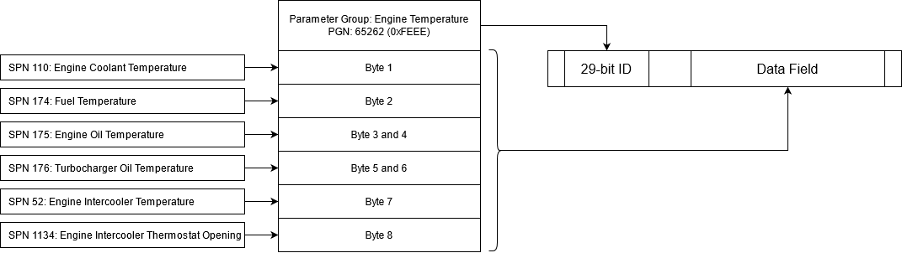
J1939 uses only the 29-bit identifier. Among other features, the ID is used to identify the source and, in some cases, the destination of data on the bus. The structure of the 29-bit identifier is illustrated in Figure 2.
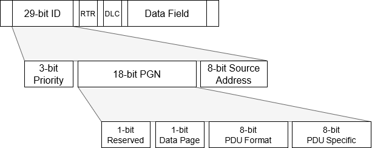
Each PGN consists of 4 fields: Reserved, Data Page, PDU Format, and PDU Specific. Reserved is always set to 0. Data Page is used to increase the number of PGNs that the standard defines. Currently the Data Page is still 0 because the full PGN range is not filled.
PDU format dictates if a message is Peer-to-Peer or a Broadcast. If PDU format is less than 240 (also referred to as PDU1) than the message is Peer-to-Peer and the destination address is stored in the PDU Specific field. On the other hand if PDU Format is 240 or greater (also referred to as PDU2), the message is broadcast and PDU Specific is used to increase the range of Parameter Groups that can be sent.
Although PDU1 is Peer-to-Peer communication, these messages can be broadcast using the 255 destination address. The 255 address is used specifically for that purpose and it is reserved, meaning that the ECU cannot possess that address.
Request messages
The J1939 protocol defines a special PGN to serve as a request for data. A PGN with the 0x00EE00 value is interpreted as a request for data where requested PGN is embedded in the message data.
Since the PDU Format (0xEE or 238) is less than 240, the request is Peer-to-Peer. The PDU Specific defines the destination address of the request. If 255 is used as a destination address, the request is broadcast and all Nodes in the network must reply to the request.
The response to the request is a message with the requested PGN. If the requested PGN is not supported by the Node, a NACK (Not Acknowledge) message is sent by the node. If the request is broadcast, NACK is not required.
Transport protocol
J1939 defines the maximum message length of 1785 bytes. The CAN itself, as a transport layer, does not support messages larger than 8 bytes, so the message needs to be packed into a sequence 8 byte size messages.
Transport protocol defines how these messages are transported and how to establish the connection with a desired node. For this, two PGNs are defined: Connection Management PGN (0x00EC00) and Transport Protocol PGN (0x00EB00).
Depending on the destination address, two types of transport are defined: if the destination is 255 the Multi-packet Broadcast is used and if the destination is between 0 and 253, Multi-packet Peer-to-Peer is used.
The Multi-packet Broadcast is simpler and it consists of sending a Broadcast Announce Message (BAM) using the Connection Management PGN and sending the data messages using the Transport Protocol PGN. After the BAM message is sent and between each data message, the transmitting Node waits for 50 - 200 ms.
Multi-packet Peer-to-Peer requires a handshaking mechanism between the sending and receiving Node. When a sending Node wants to send a message, it first sends a Request To Send (RTS) message to the receiver. The receiver than responds with the Clear To Send (CTS) message if it accepts the connection or with a Connection Abort message if it refuses. The CTS message stores the index of the next packet. The sender then sends the packet using Transport Protocol PGN and the receiver responds with a CTS message with the next packet index. This handshaking mechanism is used until the last packet is received and the receiver sends the End Of Message Acknowledge and the connection is closed. The RTS, CTS, End Of Message and Connection Abort are exchanged using the Connection Management PGN.
Network management
- Address Claimed message - The message is used to relay the address information of each Node in the network
- Cannot Claim message - The message is used to inform the network that the Node cannot claim the desired address
- Request for Address Claimed message - The message is used to request the address of every Node in the network
- Commanded Address message - The message is used to command the Node to use a specific address.
The standard Address Claim procedure dictates that every Node sends the Address Claimed message when it powers up. Sending this message, the Node informs all the other Nodes in the network what address it will use. It can happen that another Node is already is using this address. When this happens, two nodes compare the NAME values. The NAME is a 64-bit data sent with each Address Claimed message and represents the functionality of each Node. The Node with the lower NAME value will keep the address and the other Node must use a different address.
If an address clash occurs and Node must change its address, two things can happen. If the Node is Arbitrary Address Capable, it will use some mechanism to select a different address and resend the Address Claimed message. J1939 defines special address ranges for each type of Node functionality to make this process easier. If the Node is not Arbitrary Address Capable it will take the address 254 (NULL) and send the Address Claimed message with this value to indicate that it cannot claim an address. A Node with the 254 address will not send data to the network.
The Nodes that are not Arbitrary Address Capable require some other external mechanism to determine the valid address. This address definition can be done by hand, or by another node which sends a Commanded Address message that defines which Node will use which address.
Diagnostic messages
J1939 provides 19 different diagnostic messages that can be used to monitor, test, and clear diagnostic information in devices on the network. These messages are commonly referred to as DM messages. Currently, Typhoon HIL supports only DM1 diagnostic messages.
The DM1 message provides a list of Active Diagnostic Trouble Codes (DTC). These are the DTCs that are currently active on the device.
| Field | Byte | Bit(s) | Status | Description |
|---|---|---|---|---|
| Diagnostic lamp status | 0 | 7-6 | Malfunction Indicator Lamp Status | Lamp to indicate when there is an emission related trouble code active. |
| 5-4 | Red Stop Lamp Status | Lamp to indicate a problem that is severe enough to warrant stopping the vehicle. | ||
| 3-2 | Amber Warning Lamp Status | Lamp to indicate a problem with the vehicle system but the vehicle does not need to be stopped immediately. | ||
| 1-0 | Protect Lamp Status | Lamp to indicate a problem with a vehicle system that is most likely not electronic subsystem related. e.g. Coolant Temperature has exceeded it defined range. | ||
| Diagnostic lamp status (Reserved) | 1 | 7-6 | Reserved for SAE assignment Lamp Status | |
| 5-4 | Reserved for SAE assignment Lamp Status | |||
| 3-2 | Reserved for SAE assignment Lamp Status | |||
| 1-0 | Reserved for SAE assignment Lamp Status | |||
| DTC [0] | 2 | 7-0 | SPN | The Suspect Parameter Number (SPN) identifies the J1939 data parameter that is the source of the issue. Each J1939 parameter is assigned an SPN. |
| 3 | 7-0 | |||
| 4 | 7-5 | |||
| 4-0 | FMI | The Failure Mode Indicator (FMI) value indicates the type of issue that has occurred. | ||
| 5 | 7 | SPN conversion method | Specifies how the SPN and FMI are to be handled or translated. This is primarily used to handle older versions of the diagnostic protocols. | |
| 6-0 | Occurrence count | The number of times this DTC issue has occurred. | ||
| DTC [1] | ||||
| DTC [2] |
One or more Diagnostic Trouble Codes (DTC) can be sent in one message. If one DTC is active, the message will be formed in the format of LS, DTC (Lamp Status, Diagnostic Trouble Code) and if multiple DTCs are active, the message will be LS, DTC1, DTC2, DTC3, … , DTCn.
Since DM1 messages have a variable length, receiving this type of message requires an alternative method, as described in Receiving DM1 message.
DM1 diagnostic messages
Active Diagnostic Trouble Codes message, also referred to as a DM1 message, communicates the diagnostic lamp status as well as the currently active diagnostic trouble codes (DTC).
J1939 Protocol implementation in Typhoon HIL toolchain
Similar to how J1939 is an extension of CAN Bus protocol, the J1939 components in the Typhoon HIL toolchain are an extension of already existing CAN bus components. The usage of J1939 Send and J1939 Receive components is the same as CAN Bus Send and CAN Bus Receive and are supported by the same hardware devices: HIL101, HIL404, HIL602+, HIL604, HIL506, and HIL606.
In the next few sections, only the features specific to J1939 will be described.
CAN Setup
Since J1939 components are modification of CAN Bus components, CAN Setup must exist on the schematic to define the baud rate and execution rate of CAN controllers. The use of a CAN Setup component can be found here.
J1939 Send
J1939 Send (J1939 PGN Send) component is used to specify the format, values, and size of the messages to be sent.
The component is shown in Table 2, whereas the J1939 send dialog window is shown in Figure 3.
| component | component properties |
|---|---|
 J1939 Send |
|
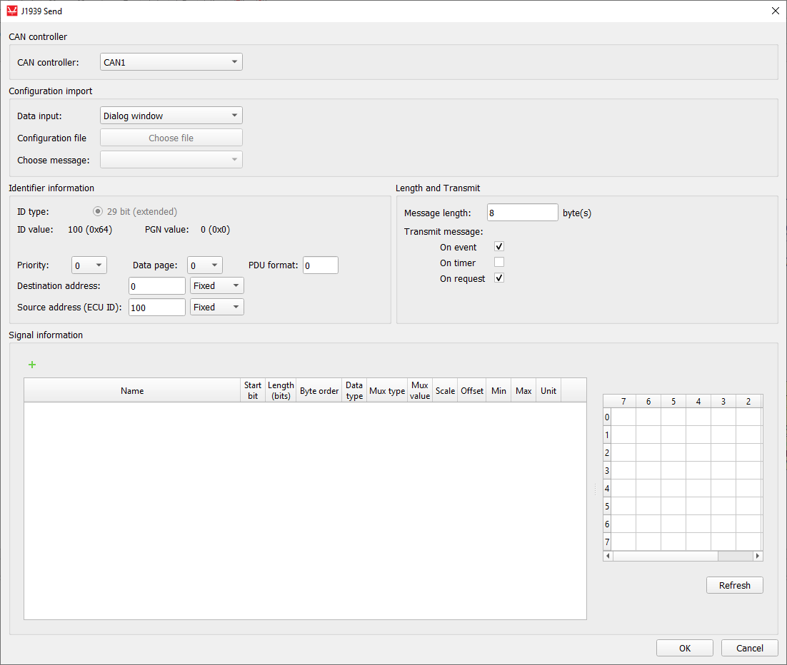
The parameter description for the J1939 Send component is given in Table 3
| property name | description |
|---|---|
| CAN controller | Choose which controller is sending the message (CAN1 or CAN2) |
| Data input | Choose if the message is defined manually through the Dialog window, or if the message is defined through a configuration file. |
| Configuration file | Choose a configuration file to parse. The file can be in DBC or ARXML format. |
| Choose message | Choose message from a configuration file to simulate |
| ID type | Defined as 29-bit extended CAN identifier (as per J1939) |
| Priority | 3-bit Priority value. A message priority 0 indicates highest priority and a message priority of 7 indicates lowest priority. |
| Data Page | 1-bit Data Page value. The Data Page bit works as a page selector for the following PDU Format field. Currently this bit is at 0, pointing to page 0 and page 1 will be used to provide extended capacity in the future. |
| PDU Format | 8-bit PDU Format value. <p>A value between 0 and 239 (PDU1) indicates a destination address in Peer-to-Peer communication. A value between 240 and 255 (PDU2, broadcast message) indicates a Group Extension. The Group Extension is used to increase the number of available messages to be broadcast. |
| Destination address / Group extension | 8-bit Destination address or Group extension value. If PDU Format is < 240, the destination address is defined. Otherwise, the group extension is defined. |
| Destination address definition | If the value is Fixed, the value from the dialog is used for the Destination address. If the value is Variable, an additional terminal is created on the component and the signal from the simulation can be connected. |
| Source address (ECU ID) | 8-bit Source address (EDU ID) value. |
| Source address definition | If the value is Fixed, the value from the dialog is used for the Source address. If the value is Variable, an additional terminal is created on the component and the signal from the simulation can be connected. |
| Message length | Specifies the length of the message payload in bytes. The length can be in range from 1 to 1785. |
| Transmit message | Specifies the condition when the message is transmitted. The
condition can be:
|
| Transmit period (hidden) | Specifies the period of message sending. This parameter is enabled if On period is chosen for value of Transmit message parameter. |
Refer to CAN Bus Send signal definition for the J1939 Send signal definition.
There can exist numerous J1939 Send components in the schematic and every such component describes one J1939 PGN message to be sent. When adding additional J1939 Send components to the model for sending multiple messages, ensure that all messages have unique IDs.
Depending on the message length defined in the dialog window, the J1939 Send component will use different message types. If the message length is less than 8, the message will be sent using normal methods the same way as the CAN Bus Send component. If message length is above 8 bytes, the Transport protocol will be used as defined in Transport protocol.
The ecu_id input to the component serves as a value for source address. The ECU ID value is purely used as a value packed in the CAN message and it is not viewed as a ECU ID for the whole system. In other words, changing the ECU ID value will not trigger the Address Claim procedure as defined in the Network management.
For the Address Claiming procedure, the J1939 Arbitration component should be used.
An ECU ID value of 254 is forbidden when sending J1939 messages. If this value is detected on the ecu_id input, the message will not be sent.
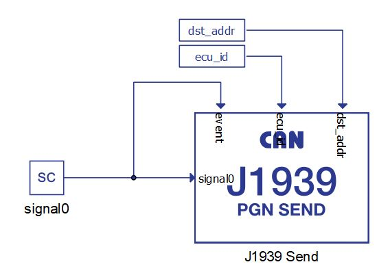
J1939 Receive
J1939 Receive (J1939 PGN Receive) component is used to unpack a message received through a CAN network
The component is shown in Table 4, whereas the J1939 receive dialog window is shown in Figure 5.
| component | component parameters |
|---|---|
|
J1939 Arbitration |
|

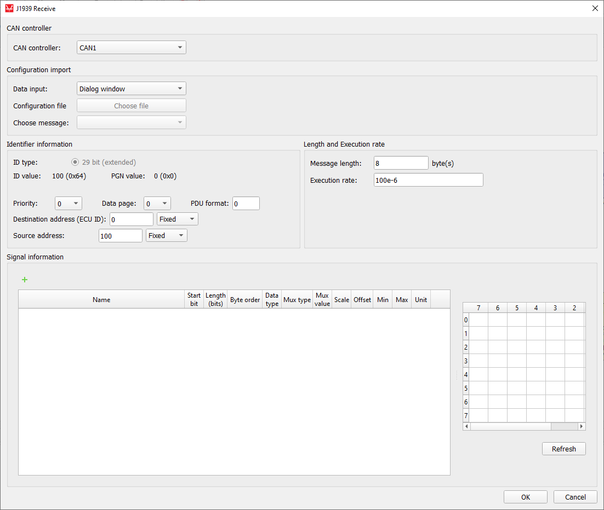
| parameter name | description |
|---|---|
| CAN controller | Choose which controller is sending the message (CAN1 or CAN2) |
| Data input | Choose if the message is defined manually through the Dialog window, or if the message is defined through a configuration file. |
| Configuration file | Choose a configuration file to parse. The file can be in DBC or ARXML format. |
| Choose message | Choose message from a configuration file to simulate |
| ID type | Defined as a 29-bit extended CAN identifier (as per J1939) |
| Priority | 3-bit Priority value. A message priority 0 indicates highest priority and a message priority of 7 indicates lowest priority. |
| Data Page | 1-bit Data Page value. The Data Page bit works as a page selector for the following PDU Format field. Currently this bit is at 0, pointing to page 0 and page 1 will be used to provide extended capacity in the future. |
| PDU Format | 8-bit PDU Format value. A value between 0 and 239 (PDU1) indicates a destination address in Peer-to-Peer communication. A value between 240 and 255 (PDU2, broadcast message) indicates a Group Extension. The Group Extension is used to increase the number of available messages to be broadcast. |
| Destination address (ECU ID) / Group extension | 8-bit Destination address or Group extension value. If PDU Format is < 240, the destination address is defined. Otherwise, the group extension is defined. |
| Destination address definition | If the value is Fixed, the value from the dialog is used for the Destination address. If the value is Variable, an additional terminal is created on the component and the signal from the simulation can be connected. |
| Source address (ECU ID) | 8-bit Source address value |
| Source address definition | If the value is Fixed, the value from the dialog is used for the Source address. If the value is Variable, an additional terminal is created on the component and the signal from the simulation can be connected. |
| Message length | Specifies the length of the message payload in bytes. The length can be in range from 1 to 1785. |
Refer to CAN Bus Receive signal definition for the J1939 Receive signal definition.
There can exist numerous J1939 Receive components in the schematic and every such component is used to receive a J1939 message with a defined ID value. Messages that have an ID value that does not match any ID value defined in J1939 Receive components are ignored.
The rcv_cnt value increases by 1 every time a new message is received.
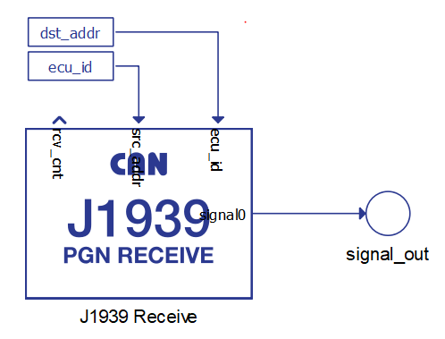
Receiving DM1 message
Since DM1 messages have a variable length, receiving this type of message requires an alternative method.
Since the signal definition is static on all CAN based components, you must define the maximum DTC signals that can be received. This means adding DTC1, DTC2, DTC3, … signals to the table even though you won't be receiving them all the time. This is shown in Figure 7. The presented configuration can receive up to 13 DTC values.
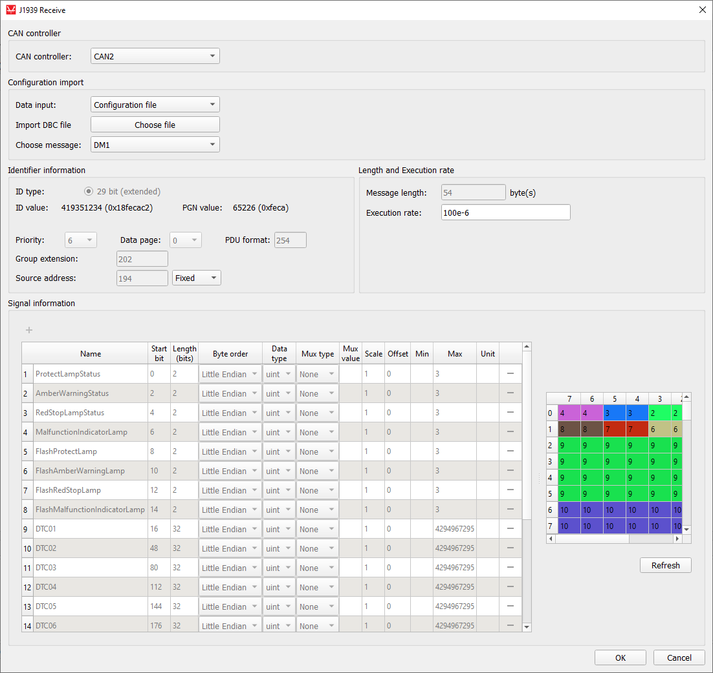
- The number of DTCs in the message is less than the number defined in the Receive component - message will be received, and all the unused DTC values will be filled with 0xFF (not used) values
- The number of DTCs in the message is exactly the same as the number defined in the Receive component - message will be received, and all TDC values will be applied
- The number of DTCs in the message is greater than the number defined in the Receive component - message will be ignored since its length is more than what the Receive component can handle
J1939 Arbitration
The J1939 Arbitration component is used to perform the address claiming process as defined in Network management.
The idea is that on J1939 Arbitration component defines one ECU ID. Each ECU on the network must perform the address claiming procedure on start up. The J1939 Arbitration component enables this.
| component | component parameters |
|---|---|
|
J1939 Arbitration |
|

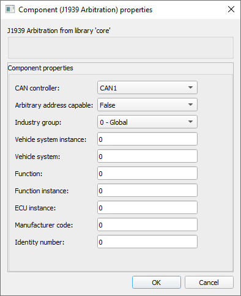
Parameter description for the J1939 Arbitration component is given in Table 7
| Parameter name | Description |
|---|---|
| CAN controller | Specify the CAN controller instance for sending the Address Claimed messages |
| Arbitrary address capable | 1-bit Arbitration address capable value |
| Industry group | 3-bit Industry group value |
| Vehicle system instance | 4-bit Vehicle system instance value |
| Vehicle system | 7-bit Vehicle system value |
| Function | 8-bit Function value |
| Function instance | 5-bit Function instance value |
| ECU instance | 3-bit ECU instance value |
| Manufacturer code | 11-bit Manufacturer code value |
| Identity number | 21-bit Identity number value |
Parameters in the dialog window, in combination, create the ECU NAME value that is used for the address claiming procedure. The preferred address of the ECU is defined as an input signal to the J1939 Arbitration component.
On simulation start, the J1939 Arbitration component will send the Address Claimed message on the network and wait for 250 ms. If no other Node on the network complains with this message, the value of the preferred_addr input will be passed to the ecu_id output and this value can be used in J1939 Send and Receive components as an ECU ID.
If at any time another node sends the Address Claimed message, and the NAME value is less than the value defined in the J1939 Arbitration component, the component will lose the arbitration. As a result, the Cannot Claim message will be sent and the ecu_id value will be 254. Using the value of 254 as an ecu_id value for the J1939 Send components will block the sending of messages.
The J1939 Arbitration component behaves as a single address capable ECU (regardless of the property value in the NAME), meaning that if the component cannot claim the proffered address, it will output the value 254 until the preferred address value is changed and the whole Claiming procedure is triggered again.
Commanded Address messages are also not supported.
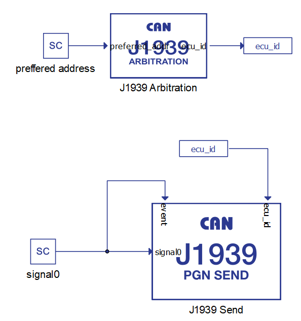
Using configuration files to specify CAN messages
CAN Bus Send/Receive, CAN FD Send/Receive and CAN FD Pack/Unpack components can import DBC or ARXML files to define the messages. The principle is the same for all components and it will be demonstrated only on the CAN Bus Send component.
To load the configuration file, you must choose Configuration file as the Data input property and navigate to the desired file using the Choose file button. If the file is parsed correctly, the Choose message combo box will be populated with the message names from the file. Choosing different messages will change the message and signal parameters in the dialog. An example is shown in Figure 10.
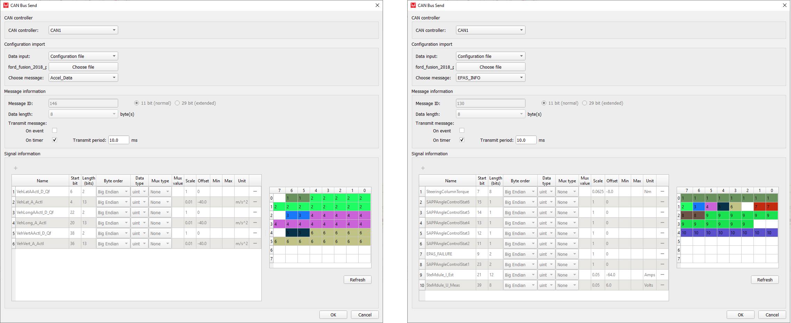
When using DBC or ARXML files to define CAN messages, all message and signal parameters are disabled for editing. If the Data input is changed to Dialog window, the parameters will be enabled for editing, but if the Data input is subsequently changed back to Configuration file, the parameters will be changed back to the values from the configuration file.
Changing component property values using Schematic API
The custom component dialog is designed to easily define CAN message parameters. Changing these values is also possible using standard Schematic API functions but in a modified way. Namely, all properties except Transmit message and Signal information are changed in the standard way, where Transmit message is specified as a Python dictionary type and Request information must be specified as a list of Python dictionary types.
| Field name | Allowed values |
|---|---|
| "On event" | True, False |
| "On timer" | True, False |
| Field name | Allowed values |
|---|---|
| "name" | ASCII string |
| "start_bit" | 0 - 63 |
| "length" | 1 - 64 |
| "byte_order" | "Little Endian", "Big Endian" |
| "data_type" | "int", "uint", "real" |
| "mux_type" | "None", "Muxer", "Muxed" |
| "mux_val" | positive integer |
| "scale" | real number |
| "offset" | real number |
| "min" | real number |
| "max" | real number |
| "unit" | ASCII string |
transmit_type = {
"On event": True,
"On timer": False
}
mdl.set_property_value(mdl.prop(can_component, "transmit_type"), transmit_type)
signals = [
{"name": "signal0", "start_bit": 0, "length": 8, "byte_order": "Little Endian", "data_type": "uint", "mux_type": "None"},
{"name": "signal1", "start_bit": 8, "length": 8, "byte_order": "Little Endian", "data_type": "uint", "mux_type": "Muxer"},
{"name": "signal2", "start_bit": 16, "length": 8, "byte_order": "Little Endian", "data_type": "uint", "mux_type": "Muxed", "mux_val": "0"},
{"name": "signal3", "start_bit": 16, "length": 8, "byte_order": "Little Endian", "data_type": "uint", "mux_type": "Muxed", "mux_val": "1"}
]
mdl.set_property_value(mdl.prop(can_component, "signals"), signals)dbc_file_path = r"C\dbc_files\ford_fusion_2018_pt.dbc"
mdl.set_property_value(mdl.prop(can_component, "file_path"), dbc_file_path)
mdl.set_property_value(mdl.prop(can_component, "choose_message"), "Lane_Keep_Assist_Control")CAN execution rates explained
- Execution rate
- CANx controller execution rate
- CANx baud rate
- Transmit period
This section aims to provide a clarification for each of these values and how they relate to each other.
First of all, it is important to distinguish two aspects in all models that use CAN communication protocol: the Signal Processing aspect, and the processing of the CAN communication protocol itself. During model compilation, all Signal Processing components on the schematic are combined in one application that is executed on one CPU core. On the other hand, all CAN components (even though they are a part of the Signal Processing library) are combined in a separate application that is executed on a different CPU core. These two applications are two different entities.
All Signal Processing components (including the CAN components) have the Execution rate property. All components that are connected and perform a logical function share the same execution rate value. The execution rate value defines how often this function is performed.
The CANx controller execution rate has the exact same function, but is specific to the CAN application. It defines how often the CAN function is called.
Each CAN Send component has a Transmit period property that defines how often that message is sent to the network. The Transmit period and the CANx controller execution rate are in direct correlation to each other in a way that the CANx controller execution rate serves as a granularity value for Transmit period. In other words, if the CANx controller execution rate is set to 1 ms, the Transmit period can only be an integer multiple of 1 ms, that is N*1 ms. Similar, if the CANx controller execution rate is set to 3 ms, the Transmit period can only have a value of N*3 ms.
Baud rate is the only value that is defined by the CAN standard. This value is expressed in bits/s and defines how quickly the message is relayed between two CAN controllers. The difference between the Transmit period and the baud rate can be easily illustrated by the example of a metronome. Metronomes periodically makes a click sound (Transmit period), but that click travels by the speed of sound to the listener (baud rate).
Figure 11 illustrates all that was explained above.
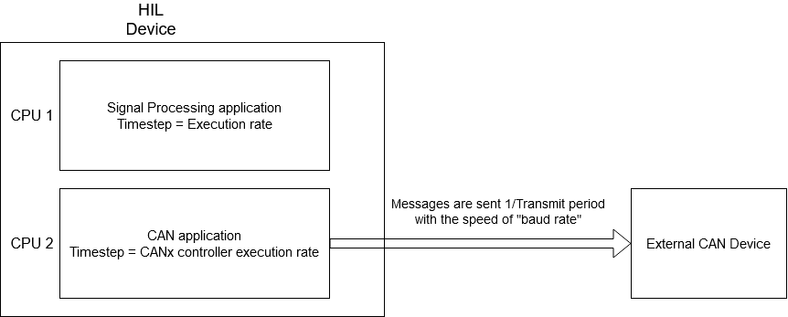
Virtual HIL support
Virtual HIL currently does not support this protocol. When using a non-real-time environment (e.g. when running the model on a local computer), inputs to this component will be discarded and outputs from this component will be zeroed.